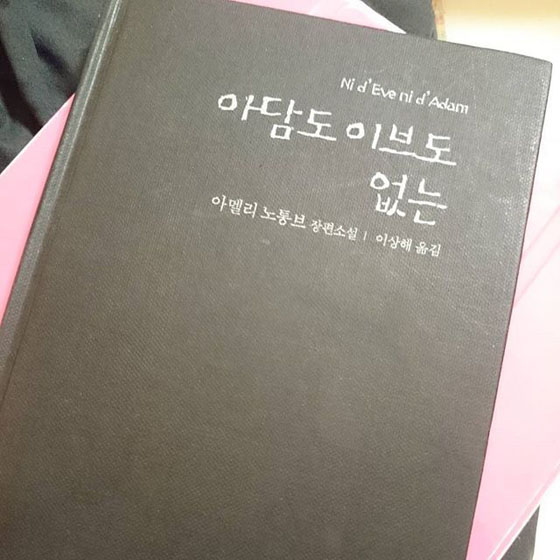

아멜리 노통브:: 아담도 이브도없는, 2007
----
자동차 한 대가 갑자기 끼어들었다. 끼어들기를 하 것만으로는 모자라는지 운전수가 차에서 내리더니 린리에게 뭐라고 소리를 빽빽 질러댔다. 내 제자는 아주 차분하게 깊이 고개 숙여 사과를 했다. 거친 남자가 씩씩 거리며 차로 돌아갔다.
"저 사람이 잘못했잖아요!" 내가 외쳤다.
"그래요." 린리가 침착하게 대답했다.
"그런데 왜 사과했어요?"
"프랑스어로 뭐라고 하는지 몰라요."
"일본어로 말해 봐요."
"칸코쿠진."
한국인. 나는 이해했다. 나는 속으로 내 제자의 예절바른 체념을 비웃었다.
"저 사람이 잘못했잖아요!" 내가 외쳤다.
"그래요." 린리가 침착하게 대답했다.
"그런데 왜 사과했어요?"
"프랑스어로 뭐라고 하는지 몰라요."
"일본어로 말해 봐요."
"칸코쿠진."
한국인. 나는 이해했다. 나는 속으로 내 제자의 예절바른 체념을 비웃었다.
----
(아멜리 노통브가 일본어를 배우는 교실에서)
"센세에게는 질문을 해서는 안 됩니다." 선생이 날 꾸짖었다.
"하지만 이해가 안 되면요?"
"그러니까 이해를 해야죠!"
나는 그때서야 일본의 외국어 교육이 왜 효과가 없는지 알 수 있었다.
"센세에게는 질문을 해서는 안 됩니다." 선생이 날 꾸짖었다.
"하지만 이해가 안 되면요?"
"그러니까 이해를 해야죠!"
나는 그때서야 일본의 외국어 교육이 왜 효과가 없는지 알 수 있었다.
----
1990년 1월 초, 나는 사업을 한다는 명목으로 진정한 권력을 휘두르는 일본의 7대 거대기업 중 하나에 입사했다. 모든 직원이 그렇듯, 나는 정년퇴직할 때까지 그 회사에서 사십여 년을 일할 작정이었다.
[두려움과 떨림]에서 내가 왜 계약기간 일 년도 끝까지 채우지 못했는지 이야기한 바 있다.
그것은 진부하기 짝이 없는 지옥이나 다름없었다. 내 운명은 일본 샐러리맨 대부분의 운명과 크게 다르지 않았다. 단지 외국여자라는 신분과 서툴기 짝이 없는 어떤 개인적 품성 때문에 상황이 좀더 악화되었을 뿐.
[두려움과 떨림]에서 내가 왜 계약기간 일 년도 끝까지 채우지 못했는지 이야기한 바 있다.
그것은 진부하기 짝이 없는 지옥이나 다름없었다. 내 운명은 일본 샐러리맨 대부분의 운명과 크게 다르지 않았다. 단지 외국여자라는 신분과 서툴기 짝이 없는 어떤 개인적 품성 때문에 상황이 좀더 악화되었을 뿐.
----
지하철에서 읽다가 육성으로 터진 부분 ㅋㅋㅋ
제일 처음 읽은건 역시 살인자의 건강법 일본살때였으니까 정말 오래전인데;;
그때부터 이분 책을 정말 좋아해서 틈날때마다 열심히 사모으고 읽는중 :3
기록을 위해서 카테고리를 생성했당